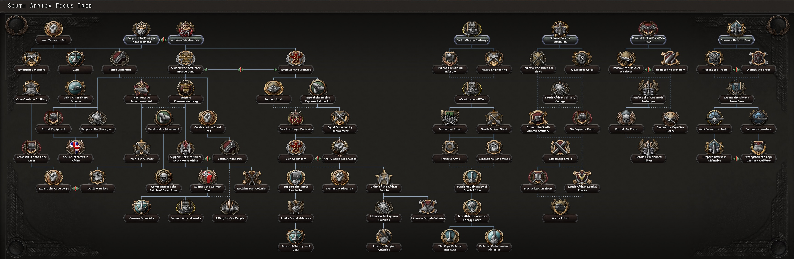
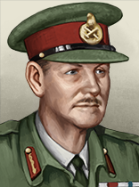

| 陆军科技 | 海军科技 | 空军科技 | 电子与工业 |
|---|---|---|---|
无
|
|
「无」 没有
|
|
| 陆军学说 | 海军学说 | 空军学说 |
|---|---|---|
|
|
「无」 |
原页面：South Africa
 南非 is a
南非 is a  英国
英国  自治领 in Southern Africa with a population of 9.75 M. It borders
自治领 in Southern Africa with a population of 9.75 M. It borders  英国和
英国和 葡萄牙 colonies to the north.
葡萄牙 colonies to the north.
Following the Second Boer War (1899–1902), South Africa was incorporated into the British Empire, becoming a self-governing dominion in 1910 as the Union of South Africa. Governed by a white minority, the Union implemented policies that entrenched racial segregation, such as the 1913 Natives Land Act, which restricted land ownership for Black South Africans. In 1931, the Statute of Westminster granted South Africa full legislative independence, enabling it to make its own decisions within the framework of the British Commonwealth. However, tensions persisted between pro-British factions and Afrikaner nationalists, many of whom sought greater autonomy from Britain.
Between 1936 and 1939, political and social divisions in South Africa intensified. The Representation of Natives Act (1936) removed Black South Africans from the Cape voters’ roll, further entrenching their political disenfranchisement. During this period, Afrikaner nationalist organizations such as the Ossewabrandwag gained prominence, expressing sympathy for Nazi ideology and reflecting anti-British sentiment among some Afrikaners.
Prime Minister J.B.M. Hertzog, an Afrikaner nationalist, advocated for South African neutrality as tensions in Europe escalated toward World War II. His stance clashed with that of Jan Smuts, a pro-British leader who supported South Africa’s alignment with the Allies. In 1939, Hertzog’s neutrality policy was defeated in Parliament, leading to his resignation. Smuts succeeded him as Prime Minister and brought South Africa into the war on the side of the Allies, despite opposition from nationalist factions.

South Africa's unique focus tree has 6 main branches and 2 sub-branches:
 南非 开局拥有以下国家精神：
南非 开局拥有以下国家精神：
South Africa will have the Ossewabrandwag and History of Segregation national spirits at the start of both the 1936 and 1939 scenario. These national spirits can be modified depending on which national focuses South Africa chooses throughout the course of a game.
 南非开局拥有 2 个可用科研槽；另有 3 个可通过国策树解锁。
南非开局拥有 2 个可用科研槽；另有 3 个可通过国策树解锁。
| 陆军科技 | 海军科技 | 空军科技 | 电子与工业 |
|---|---|---|---|
无
|
|
「无」 没有
|
|
| 陆军学说 | 海军学说 | 空军学说 |
|---|---|---|
|
|
「无」 |
| 陆军科技 | 海军科技 | 空军科技 | 电子与工业 |
|---|---|---|---|
无
|
|
「无」 没有
|
|
| 陆军学说 | 海军学说 | 空军学说 |
|---|---|---|
|
|
|
 南非 has a number of unique names for various technologies and equipment, listed here. Particularly Commonwealth armaments, including their own Equipment. Note that generic names are not listed.
南非 has a number of unique names for various technologies and equipment, listed here. Particularly Commonwealth armaments, including their own Equipment. Note that generic names are not listed.
| 类型 | 1918 | 1936 | 1938 | 1939 | 1940 | 1942 | 1943 | 1944 |
|---|---|---|---|---|---|---|---|---|
| 支援武器 | Vickers MG & Stokes mortar | Lewis Mk. III DEMS & SBML two-inch mortar | Bren Mk. I & ML 3 inch mortar | Bren Mk. III & ML 4.2 inch Mortar | ||||
| 步兵装备 | Rifle No.1 MkIII | Rifle No.4 MkI | Sten MkII | Reider SMLE-CAR | ||||
| 步兵反坦克 | Boys Anti-Tank Rifle | PIAT | ||||||
| 机械化 | Bren Carrier | Universal Carrier | Windsor Carrier |
| 科技年份 | 轻型（反坦克/自行火炮/防空） | 中型（反坦克/自行火炮/防空） | 现代（反坦克/自行火炮/防空） | 重型（反坦克/自行火炮/防空） | 超重型（反坦克/自行火炮/防空） |
|---|---|---|---|---|---|
| 1918 | Mark V | ||||
| 1934 | Vickers II (Deacon / Birch / Vickers II AA) | Vickers (NA / Gun Carrier Mk. I / NA) | |||
| 1936 | Matilda LP (Valiant / Priest / Matilda AA) | ||||
| 1938 | Crusader LP (Cavalier / Centaur / Crusader AA) | ||||
| 1940 | Cromwell LP (Charioteer / Avenger / Cromwell AA) | Churchill LP (Churchill Gun Carrier / Churchill AVRE / Churchill AA) | |||
| 1941 | Valentine (Archer / Bishop / Valentine AA) | Tortoise (Iron Duke / NA / NA) | |||
| 1943 | Comet LP (Contentious / Sexton / Comet Marksman) | Black Prince LP (Hector / Black Prince AVRE / Black Prince Marksman) | |||
| 1945 | Centurion (Centurion Malkara / Centurion AVRE / Centurion Marksman) | ||||
| 备注：若无一步不退，中型坦克 I 与 II 将推迟一年解锁。 | |||||
| 科技年份 | 防空炮 | 火炮 | 火箭炮 | 反坦克炮 |
|---|---|---|---|---|
| 1934 | QF 18-pounder | |||
| 1936 | QF 3-inch | QF 2-pounder | ||
| 1939 | QF 25-pounder | |||
| 1940 | QF 40 mm Bofors | RP-3 HE/GP | QF 6-pounder | |
| 1942 | BL 5.5-inch Medium Gun | |||
| 1943 | QF 3.7-inch | RP-3 HE/SAP | QF 17-pounder |
| 科技年份 | 近距空中支援（舰载） | 战斗机（舰载） | 海军轰炸机（舰载） | 重型战斗机 | 战术轰炸机 | 战略轰炸机 |
|---|---|---|---|---|---|---|
| 1933 | Gladiator | Whitley | NA | |||
| 1936 | Hector (Osprey) | Hurricane (Sea Gladiator) | Swordfish (Shark) | Blenheim | 惠灵顿 | Halifax |
| 1940 | Typhoon (Skua) | Spitfire (Fulmar) | Albacore (Roc) | Beaufighter | Beaufort | Lancaster |
| 1944 | Tempest (Sea Fury) | Spiteful (Firefly) | Barracuda (Firebrand) | Mosquito FB | Mosquito B | Lincoln |
| 喷气发动机技术 | ||||||
| 1945 | Meteor | Venom | ||||
| 1950 | Vampire | Canberra | Valiant | |||
 南非 owns 7 states.
南非 owns 7 states.
| 州 | 城市 | 地形（省份数） | 区域 | ||
|---|---|---|---|---|---|
| Cape | Cape Town | 10 | 发达乡村区 | 1,637,178 | |
| 卡拉斯 | – | – | 荒地 | 46,200 | |
| 霍马斯 | Windhoek | 1 | 牧区 | 254,100 | |
| 库内内 | – | – | 荒地 | 69,300 | |
| Natal | Durban Port Elizabeth |
3 1 |
城市区 | 3,962,157 | |
| 奥乔宗朱帕 | – | – | 牧区 | 92,400 | |
| 德兰士瓦 | Pretoria | 10 | 城市区 | 3,680,363 |
 南非 starts as
南非 starts as  民主主义 with elections every 3 years. The next election is in September 1937.
民主主义 with elections every 3 years. The next election is in September 1937.
 南非 的起始政党。
南非 的起始政党。
| 同上 | 政党名称 | 支持率 | 领袖 | Ruling |
|---|---|---|---|---|
| United National South African Party | 75% | J·B·M·赫尔佐格 | ||
| 南非共产党（SACP） | 5% | 摩西·科塔内 | ||
| 净化国民党（GNP） | 20% | D·F·马兰 | ||
| 非洲人国民大会（ANC） | 0% | 皮克斯利·卡·伊萨卡·塞梅 |
| 同上 | 政党名称 | 支持率 | 领袖 | Ruling |
|---|---|---|---|---|
| United National South African Party | 100% | 扬·史末资 | ||
| 南非共产党（SACP） | 0% | 摩西·科塔内 | ||
| 净化国民党（GNP） | 0% | D·F·马兰 | ||
| 非洲人国民大会（ANC） | 0% | 皮克斯利·卡·伊萨卡·塞梅 |
南非 的可能国家领袖。
的可能国家领袖。
| 意识形态 | 肖像 | 名称 | 党派 | 特质 | 效果 | 可用 |
|---|---|---|---|---|---|---|
保守主义 |
J·B·M·赫尔佐格 | 南非联合国民党（联合党） | – | – | 1936 年起始领袖 | |
保守主义 |
扬·史末资 | 南非联合国民党（联合党） | – | – | 1939 年起始领袖 | |
马克思主义 |
摩西·科塔内 | 南非共产党（SACP） | – | – | 起始共产主义领袖 | |
法西斯主义 |
D·F·马兰 | 净化国民党（GNP） | – | – | 法西斯主义开局领袖
| |
中间主义 |
皮克斯利·卡·伊萨卡·塞梅 | 非洲人国民大会（ANC） | – | – | 中立主义开局领袖
|
南非 的可能国名。
的可能国名。
| 同上 | 国家名称 |
|---|---|
| 南非 | |
| 开普公社 | |
| 民族主义南非 | |
| Unitary South Africa |
南非 的部长与军事幕僚。
的部长与军事幕僚。
| 名称 | 特质 | 效果 | 要求 | 花费（） |
|---|---|---|---|---|
| D·F·马兰 | 幕后暗算者 |
|
– | 150 |
| J·F·范·伦斯堡 | 法西斯煽动家 |
|
|
150 |
| Sir Patrick Duncan | 民主改革者 |
|
|
150 |
| Abram Fischer | 共产主义革命者 |
|
|
150 |
| Nicolaas Havenga | 工业巨头 | – | 150 | |
| E.G. Jansen | 沉默的实干家 |
|
– | 150 |
| 随机 | 神秘绅士 |
|
|
150 |
| 名称 | 特质 | 效果 | 要求 | 花费（） |
|---|---|---|---|---|
| J·F·范·伦斯堡 | 军事理论家 |
|
– | 100 |
| S.P. 勒鲁 | 空战理论家 |
|
– | 100 |
| 名称 | 特质 | 效果 | 要求 | 花费（） |
|---|---|---|---|---|
| James Mitchell-Baker | 陆军机动（专家） |
|
– | 100 |
| Leonard Beyers | 陆军防御（专家） |
|
– | 100 |
| 名称 | 特质 | 效果 | 要求 | 花费（） |
|---|---|---|---|---|
| Pierre Oliver-Knoll | 海军机动（专家） |
|
– | 100 |
| Cornelis van Zuigenbrogge | 破交作战（专家） |
|
– | 100 |
| 名称 | 特质 | 效果 | 要求 | 花费（） |
|---|---|---|---|---|
| Adolf Malan | 全天候（专家） |
|
– | 100 |
| Pierre van Ryneveld | 地面支援（专家） |
|
– | 100 |
| 名称 | 特质 | 效果 | 要求 | 花费（） |
|---|---|---|---|---|
| Robert Palmer | 陆军重整（专家） |
|
– | 100 |
| C. de Weenburg du Toit | 装甲（专家） |
|
– | 100 |
| Marinus van Osterkamp | 海军打击（专家） |
|
– | 100 |
| Jeannot de la Tourier | 屏卫舰（专家） |
|
– | 100 |
| 肖像 | 名称 | 特质 | 要求 | |||||
|---|---|---|---|---|---|---|---|---|
 |
George Edwin Brink | 4 | 4 | 4 | 4 | 1 | – |
| 肖像 | 名称 | MNV |
COR |
特质 | 要求 | |||
|---|---|---|---|---|---|---|---|---|
| Guy Hallifax | 3 | 4 | 2 | 2 | 2 | – |
| 标志 | 名称 | 类型 | 效果 | 要求 | 花费（） |
DLC |
|---|---|---|---|---|---|---|

|
South African Railways | 铁路公司 |
|
|
50 | |

|
工业连 | 工业财团 |
|
|
150 | |

|
电子连 | 电子学财团 |
|
|
150 |
南非 的设计公司。
的设计公司。
| 标志 | 名称 | 类型 | 效果 | 要求 | 花费（） |
DLC |
|---|---|---|---|---|---|---|

|
Iscor | 中型坦克设计商 |
选择此设计公司后，只要它仍在受雇，就会永久影响其受雇期间研究的所有装备的性能。 |
|
150 |
| 标志 | 名称 | 类型 | 效果 | 要求 | 花费（） |
|---|---|---|---|---|---|

|
海军连 | 舰船设计商 |
|
– | 150 |
| 标志 | 名称 | 类型 | 效果 | 要求 | 花费（） |
|---|---|---|---|---|---|

|
轻型航空连 | 轻型飞机设计商 |
选择此设计公司后，只要它仍在受雇，就会永久影响其受雇期间研究的所有装备的性能。 |
– | 150 |

|
中型航空连 | 中型飞机设计商 |
选择此设计公司后，只要它仍在受雇，就会永久影响其受雇期间研究的所有装备的性能。 |
– | 150 |

|
重型航空连 | 重型飞机设计商 |
选择此设计公司后，只要它仍在受雇，就会永久影响其受雇期间研究的所有装备的性能。 |
– | 150 |

|
海军空军连 | 海军飞机设计商 |
选择此设计公司后，只要它仍在受雇，就会永久影响其受雇期间研究的所有装备的性能。 |
– | 150 |
| 标志 | 名称 | 类型 | 效果 | 要求 | 花费（） |
|---|---|---|---|---|---|

|
摩托化连 | 摩托化装备设计商 |
|
– | 150 |

|
轻武器公司 | 步兵装备设计商 |
|
– | 150 |

|
火炮连 | 火炮设计商 |
|
– | 150 |
 南非 has access to these 军事工业组织.
南非 has access to these 军事工业组织.
| ||||||||||||||||||||||||||||||||||||||||||||||||||||||||||||||||||||||||||||||||||||||||||||||||||||||||||||||||||||||||||||||||||||||||||||
| ||||||||||||||||||||||||||||||||||||||||||||||||||||||||||
| ||||||||||||||||||||||||||||||||||||||||||||||||||||||||||||||||||||||||||||||||||||||||||||||||||||||||||||||||||||||||||||||||||||||||
| ||||||||||||||||||||||||||||||||||||||||||||||||||||||||||||||||||||||||||||||||||||||||||||||||||||||||||||||||||||||||||||||||||||||||||||||||||||||||||||||||||||||||||||||||||||||||||||||||||||||||||||||||||||||||||||||||||||||||||||||||||||||||||||||||||||||||||||||||
1936
| 征兵法案 | 贸易法案 | 经济法令 |
|---|---|---|
|
|
|
1939
| 征兵法案 | 贸易法案 | 经济法令 |
|---|---|---|
|
|
|
年份 |
军用工厂 |
海军船坞 |
民用工厂 |
建筑槽位 |
|---|---|---|---|---|
| 1936 | 1 | 0 | 9 (-3) | 18 |
*红色 中的数字表示生产消费品所需的民用工厂数量，依据经济法案以及军用与民用工厂总数向上取整。
年份 |
石油 |
铝 |
橡胶 |
钨 |
钢铁 |
铬 |
煤 |
|---|---|---|---|---|---|---|---|
| 1936 | 0 | 0 | 0 | 0 | 19 (-9) | 197 (-98) | 31 (-15) |
*这些数字表示游戏开始一小时后可用的资源量。红色 中的数字表示因贸易法案而留作出口的资源量。
| 类型 | # 1936 | # 1939 | |
|---|---|---|---|
| 步兵 | 6 | ||
| 师总数 | 6 | 6 | |
| 已用人力 | 27.00K | 27.00K | |
| 师 | 名称列表 | # 1936 | # 1939 | 支援连 | 战斗营 |
|---|---|---|---|---|---|
| 驻军师 | 3 | 3 | 6x | ||
| 驻军师 | 3 | 3 | 3x | ||
| Armoured Divisions | 0 | 0 | 2x |
| 类型 | # 1936 | # 1939 | |
|---|---|---|---|
| 运输船队 | 25 | ||
| 舰船总数 | 0 | 0 | |
| 已用人力 | 0 | 0 | |
| 类型 | |||||
|---|---|---|---|---|---|
| 战斗机 | 30 | 75 | |||
| 海军轰炸机 | 0 | 12 | |||
| 战术轰炸机 | 0 | 12 | |||
| 飞机总数 | 30 | 30 | 99 | 99 | |
| 已用人力 | 600 | 600 | 2.22K | 2.22K | |
To start out, do the focuses Abandon Westminster, Support the Afrikaaner Broederbond, Support Ossewabrandwag and Support Nazification of South West Africa. Build up your Industry, Civilian Factories first, especially in Transvaal, as that will give you another achievement, District 9, as well. Do not build an army, but do produce a variety of equipment to build one later, I usually add at least a few factories on 火炮和支持装备 as those are very useful. For political advisors, get the 法西斯煽动家, the 沉默的实干家 and the 工业巨头. Around mid to late 1938 do the Focus 支持德国政变, (followed by A King for our People) this will trigger the South African civil war. To win this, rush for the supply depots and encircle your out of supplies enemies and destroy them where possible. Going for 大规模作战计划 will be very useful as it grants you both 指挥点数 to use Force attack more often and 突破, however, 优势火力 should also work just fine. Win the civil war by mid 1939 at the latest and join the Axis. Build up an army of at least 10 Divisions, add whatever you like to add, I went with 7 Inf, 1 Art, 1 AA with Art, AA, Engineer support, later adding Logistics as well. When Italy joins the Axis, set up a 海军登陆 order from Taranto to Tel Aviv and the two tiles above it. Wait until the Axis gain 制海权, you probably won't be able to help a lot with this but it will happen anyways, then launch your naval Invasion. Once these three Tiles are secured, you will get the Crusader Kings Achievement.
By this point, the year should be 1940 or 1941. If you have been building your industry as described above, you will have gotten the District 9 achievement as well, and releasing any 1 Subject, such as Namibia, while independent will also grant you the I am the Tong Master achievement. Unless your Invasion of the Levant gets crushed like mine was, you can probably also go on to win the War and potentially get the Rule Britannia achievement.

十字军之王（Crusader Kings） 作为南非，完成人民之王焦点并夺取耶路撒冷。 |

十字军之王 2（Crusader Kings 2） 作为南非，完成反殖民主义十字军焦点，通过该焦点释放所有欧洲殖民地，并占领伦敦。 |

District 9 作为南非，在德兰士瓦拥有 9 座民用工厂。 |

我是唐帮大师 作为南非，摆脱英国的控制并傀儡化另一个国家。 |

统治不列颠（Rule Britannia） 作为任一英国自治领，征服整个不列颠。 |
| 非洲 |
| 非洲 |
|
| 非洲之角国家 |
|
 Vauxhall
Vauxhall
 霍克飞机
霍克飞机 克罗斯利汽车
克罗斯利汽车